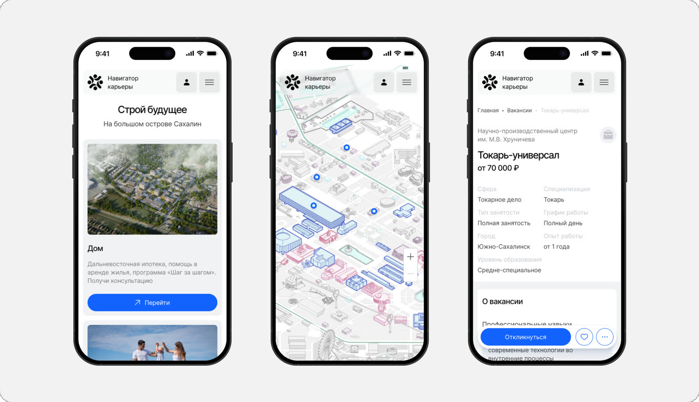
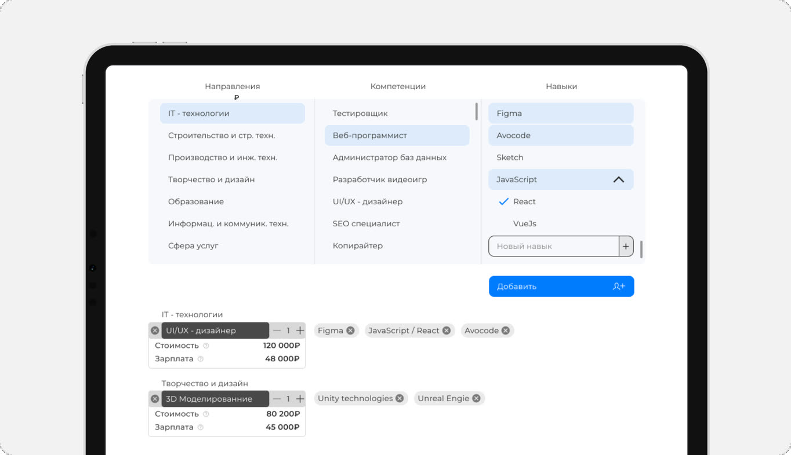
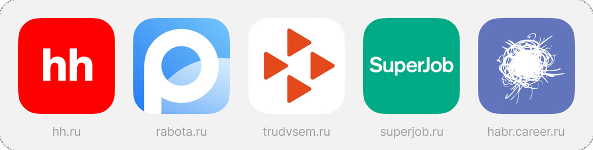
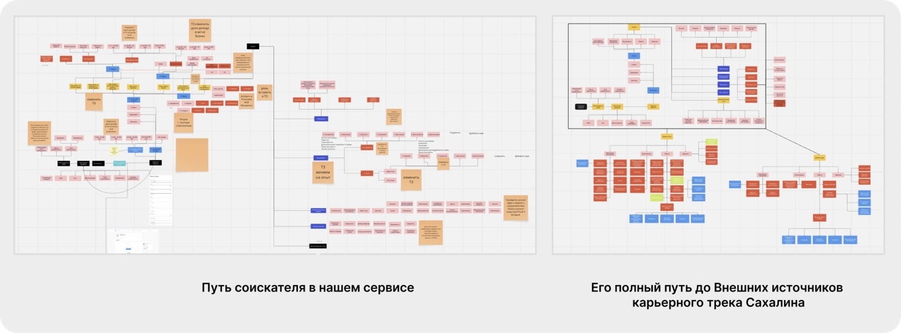
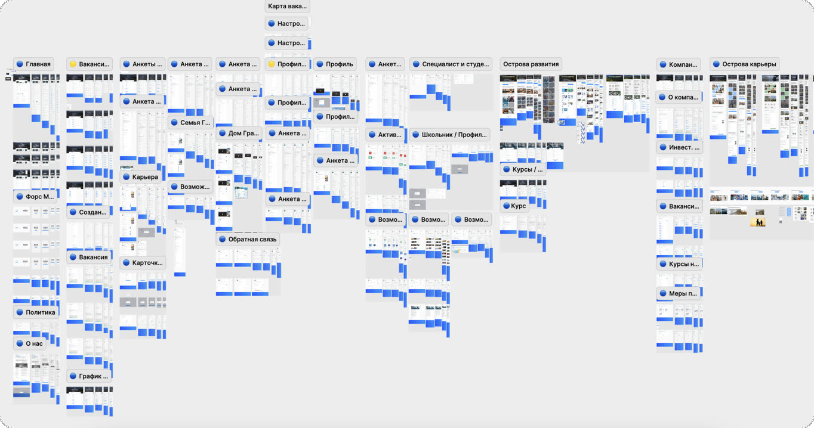
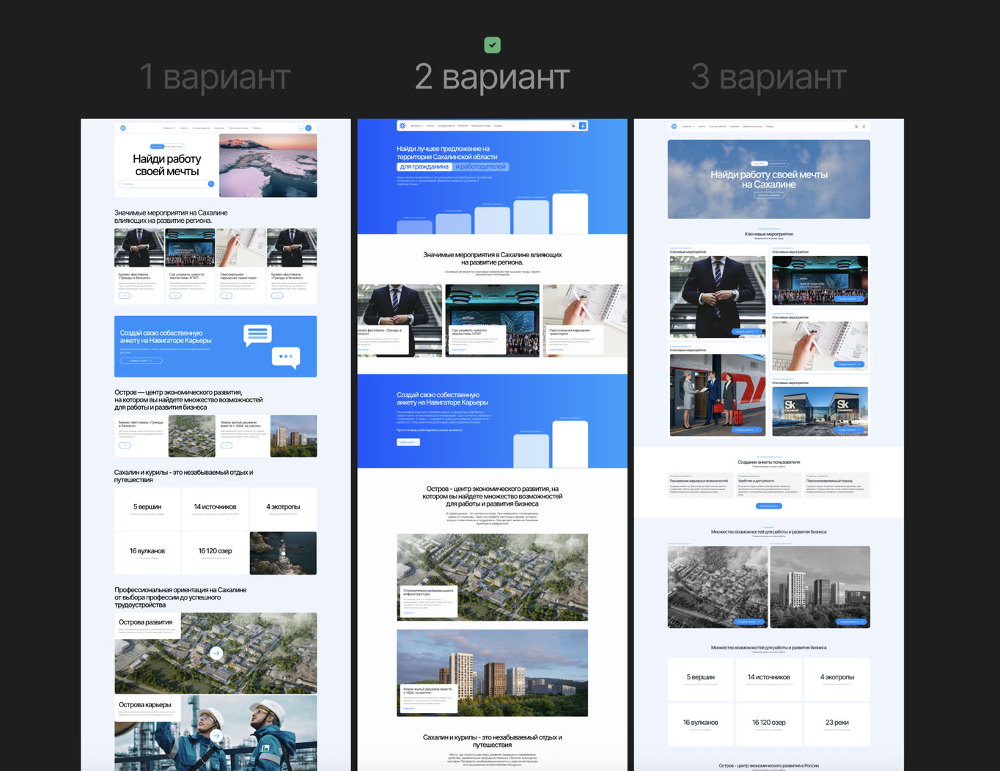
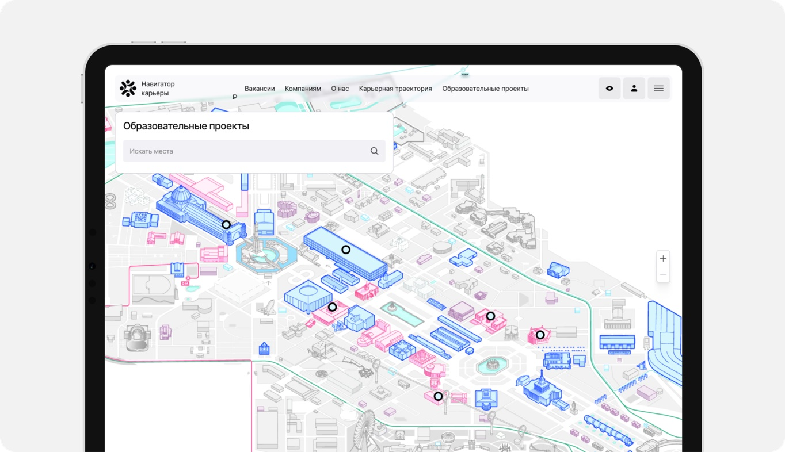

Навигатор Карьеры
Региональная карьерная платформа Сахалинской области: от первой гипотезы до продукта для 20 000+ пользователей и 500+ работодателей. За четыре года я прошёл путь от единственного дизайнера в команде из 5 человек до лида дизайна в команде из 16.
В команде: 4 дизайнера, 4 фронтенд- и 4 бэкенд-разработчика, фулстек-разработчик, PM, тимлид, 2 тестировщика.
Построить с нуля региональную карьерную платформу, когда нет ни продуктовой модели, ни сценариев, ни стратегии. Затем сопровождать её рост от MVP job-сервиса до инструмента построения карьерного трека для взрослых, студентов и школьников.
Спроектировал интерфейсы соискателя, работодателя и админки, универсальный конструктор форм и интерактивную карту павильонов на ВДНХ. Провёл два полных редизайна, вырастил дизайн-команду и собрал UI-кит со Storybook.
- 20 000+ пользователей, 500+ компаний, 2000+ вакансий
- 10 000+ регистраций через сенсорные стенды на ВДНХ
- 20+ форм собрали админы без разработки, это ~60–100 дней работы разработчиков (оценка)
- Сборка интерфейса — 1–2 дня вместо недели после внедрения UI-кита
- 3 junior-дизайнера обучены на проекте
Контекст
Проект стартовал фактически с нуля: не было продуктовой модели, сценариев и понимания, каким должен стать продукт. Платформа несколько раз меняла масштаб и аудиторию, и каждый раз приходилось пересобирать архитектуру, а не просто дорисовывать экраны.
Моя роль выходила за рамки макетов. Я формулировал требования, когда ожидания менялись по ходу разработки, помогал структурировать видение продукта и искал баланс между желаниями руководства, сложностью реализации и реальными болями пользователей.
Этапы продукта
От гипотезы к MVP job-сервиса
Всё началось с идеи «Заявки на специалиста»: работодатель описывает нужного сотрудника через цепочку, а организация получает готовый план обучения под этот запрос.

Затем продукт расширили до MVP job-сервиса с двумя ролями, соискателем и работодателем. Я спроектировал вакансии и отклики, анкеты и профили компаний, избранное, сообщения и агрегатор образовательных курсов. Перед этим провёл бенчмарк hh.ru, rabota.ru, «Работы в России», SuperJob, Хабр Карьеры и локальных досок Сахалина и свёл функциональность в сравнительную таблицу по ключевым сценариям.

Карьерный трек и админ-панель
С переходом проекта в АРЧК идеология сменилась: сервис должен не агрегировать вакансии, а сопровождать человека на разных этапах профессионального развития. Процесс стал продуктовым: гипотезы, исследование, приоритизация.

Параллельно я спроектировал админ-панель для всех сущностей платформы, и команда получила возможность управлять контентом без разработки:

Конструктор форм
Самая сложная задача админки. Администраторы хотели размещать опросы и формы на любой странице, не заказывая каждый раз новый интерфейс. Я спроектировал конструктор: формы под конкретную роль, сборка из базовых типов полей, гибкая структура вопросов.
Результат: админы собрали 20+ форм без разработчиков. Раньше одна форма занимала 3–5 дней разработки.
Редизайн и UI-кит
После смены руководства аудитория расширилась на студентов и школьников, и сайту понадобился новый, более молодой визуальный язык. Я сделал несколько концептов первого экрана, руководство выбрало направление.

Дальше я настоял, чтобы редизайн не стал перерисовкой экранов, и выбил время на полноценный UI-кит: компоненты, система отступов, токены, светлая и тёмная тема. Его собирали вместе с тремя джунами, которых я обучил на проекте. Параллельно с фронтендом собрали Storybook.
Результат: дизайн и вёрстка перестали расходиться, а сборка интерфейса сократилась с нескольких дней или недели до 1–2 дней.
Интерактивная карта и стенды на ВДНХ
Когда у проекта появились павильоны на ВДНХ, мы запустили раздел с интерактивной картой павильонов: компании и события в каждом. Регистрацию и ключевые страницы адаптировали под сенсорные экраны в павильонах, а на стенде стояла форма быстрой регистрации.
Результат: 10 000+ регистраций через стенды.

Решение, от которого я отговорил
Руководство хотело добавить на сайт ленту коротких видео в духе TikTok. Я отговорил по трём причинам:
- Дорого и без доказательств. Реализация стоила дорого, а гипотеза не была подкреплена аналитикой.
- Нет источника контента. UGC — это отдельный продукт со своей модерацией, мотивацией авторов и онбордингом, и его пришлось бы проектировать с нуля.
- Не помогает главной задаче: найти работу и построить карьерный трек.
Как я вёл команду
Это был мой первый опыт управления, и я выстраивал процессы по ходу:
- Ежедневные синки. Если человек не мог прийти, писал апдейт в чат. В рабочем канале команды были разделы для дейли, полезных материалов, референсов и доступов.
- «UI-клуб» раз в 1–2 месяца. Рисовали концепты вне рамок проекта, чтобы прокачивать насмотренность и не выгорать на рутине.
- Ретро. Собирал, что команде мешает, и сам относил это руководству, чтобы менять процессы.
- Перформанс-ревью. Был точкой проверки для повышения джунов.
Ошибка, которую я признаю. Долгое время я делал дизайн-ревью «между делом». Когда горели сроки, его пропускали, расхождения с продом копились, и я закрывал их точечными UI-багами. Вывод: ревью должно быть обязательным этапом процесса. Его я внедрил уже на следующем проекте (см. Education EcoSystem).
Чему научился. Лидерство — отдельный навык, с ним не рождаются. Мне очень помог опыт преподавателя в колледже: там я прокачал коммуникацию и публичные выступления, и они пригодились и в работе с командой, и в защите решений перед руководством.